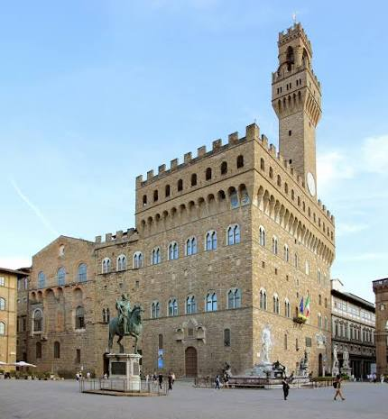
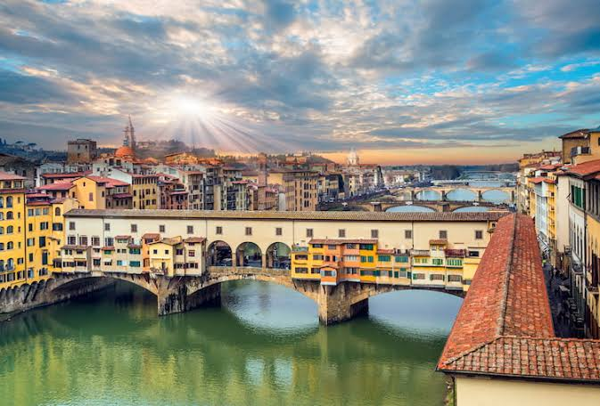
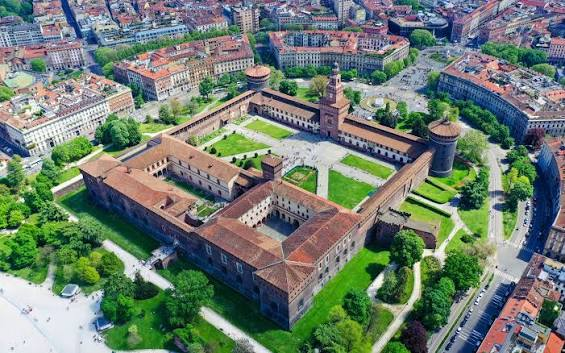

Florencia
Florencia, capital de la región de Toscana en Italia, alberga varias obras maestras de la arquitectura y el arte renacentista. Una de sus atracciones más icónicas es el Domo, una catedral con un domo con tejas de terracota que diseñó Brunelleschi y un campanario diseñado por Giotto. La Galería de la Academia muestra la escultura del "David" de Miguel Ángel. La Galería Uffizi exhibe "El nacimiento de Venus" de Botticelli y "La Anunciación" de Da Vinci.
Lugares turisticos
Palazzo Vecchio
Es el palacio más importante y el símbolo político de Florencia, Italia. Hoy en día funciona como la sede del Ayuntamiento de Florencia y como un concurrido museo. Fue construido a finales del siglo XIII como sede del gobierno de la República de Florencia y más tarde fue residencia de los Médici.

Ponte Vecchio
Es un famoso puente medieval de piedra ubicado en Florencia, Italia, que cruza el río Arno en su punto más estrecho. Es uno de los pocos puentes habitados del mundo que se conservan. Está lleno de pequeñas edificaciones suspendidas sobre el agua

Galería Uffizi
Es un palacio y museo de Florencia que posee una de las más antiguas e importantes colecciones de arte del mundo. Es una de las atracciones turísticas más visitadas de Florencia y la pinacoteca más concurrida de Italia, que en 2019 recibió 2,8 millones de visitantes.

Catedral de Santa María del Fiore
La basílica catedral metropolitana de Santa María de la Flor, es la sede episcopal de la arquidiócesis de Florencia, Italia. Es una de las obras maestras de la primera arquitectura renacentista del Renacimiento italiano.